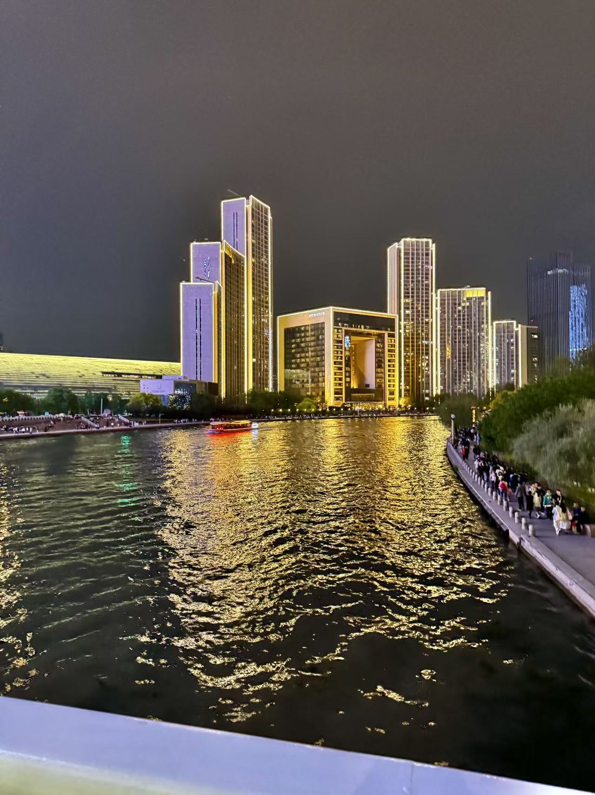
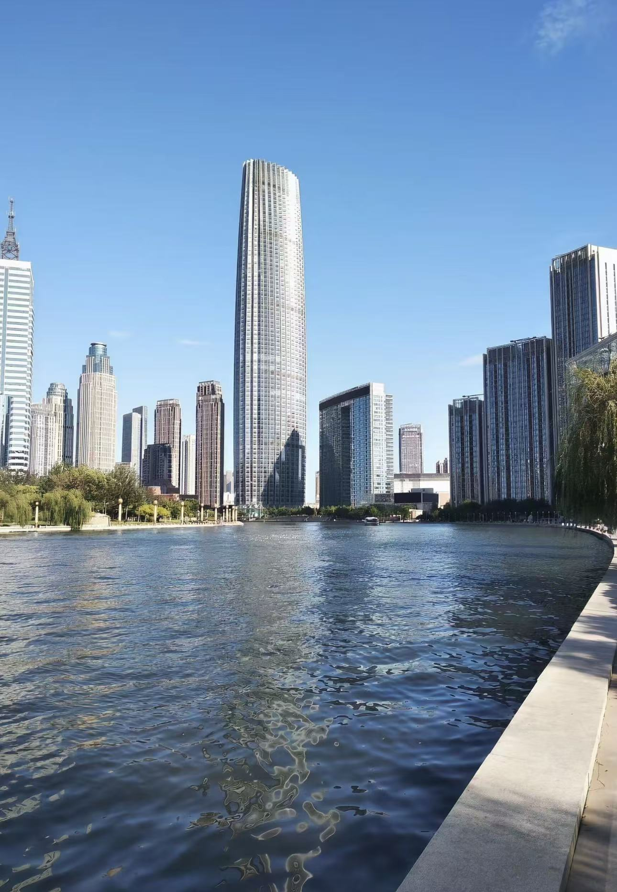

Thoughtful routes across the Haihe riverside, city parks, and coastal paths — designed for daily movement, relaxed training, and city-night runs that feel genuinely local.
Why runners use this guide
Clear route selection
Each route is matched to a specific running need, from beginner comfort to endurance training.
Practical guidance
Runners can quickly understand surface, distance, and style before heading out.
Better trip planning
Whether it is a morning jog, evening recovery run, or long aerobic session, the guide makes the choice easier.
Designed for city movement
Running routes that feel like Tianjin.
We highlight spaces people actually use—riverside loops, open water-edge paths, and park routes that suit both routine practice and scenic evening runs.


Start here
Three steps from "I should run" to actually being out the door.
-
01
Pick a route by feel
Short and soft for a first run, flat and lit for an evening session, wide and open for long mileage. Each route page says who it suits before you commit.
Compare the four routes → -
02
See it on the map
Four mini maps show the actual track, the landmarks you pass, and where the water and rest points sit. Tap a landmark to see what it is.
Open the route maps → -
03
Know what to do with it
Every route comes with a suggested session — easy aerobic, short intervals, or steady state — so you are not guessing what "go for a run" means today.
Read the training tips →